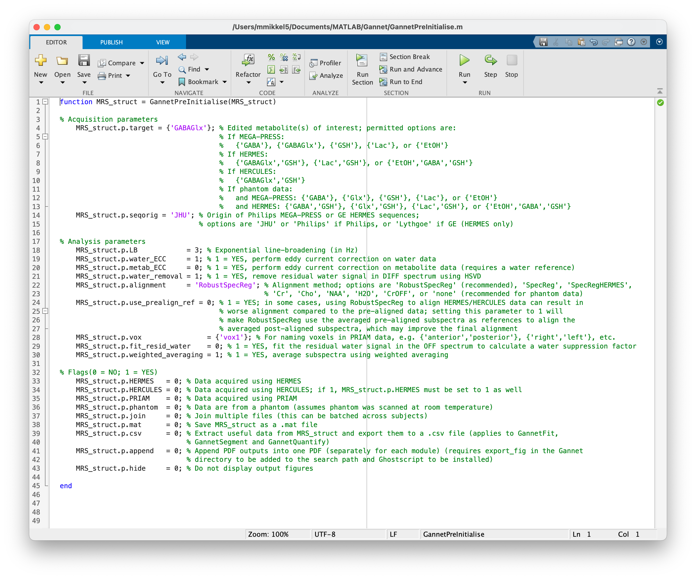

Gannet simplifies the preprocessing, signal fitting, and
quantification pipeline of edited MRS data. All you need to get started
is a basic understanding of MATLAB and the five Gannet modules (listed
below).
If this is your first time using Gannet, you should read through the
Reference
as well. If you have previously worked with Gannet and only need a quick
refresher about the command syntax, this page will probably be all you
need to get started again.
Modules
The linear workflow of Gannet is made up of five modules. For proper
functionality, they need to be executed in the following order:
Module
Description
GannetLoad
Loads raw data exported from the scanner; preprocesses
them; plots the edited spectra; and gives information about the time
course of the experiment.
GannetFit
Models the metabolite signals of interest in the
difference spectra and the reference compounds; plots the data and the
model fits; and gives basic quantification results and information about
spectral quality.
GannetCoRegister
Loads the provided structural image data files;
co-registers the loaded MRS voxel to them; and produces a figure showing
the localization of the voxel on the structural image on three
orthogonal slices.
GannetSegment
Calls SPM to segment the structural images; determines
the fractional tissue composition (gray matter, white matter, and CSF)
within the MRS voxel; produces a figure showing the tissue fractions as
overlays and displays CSF-corrected metabolite estimates.
GannetQuantify
Uses the segmentation information to perform partial
volume tissue correction and produces a figure displaying several
tissue-corrected metabolite measurements.
Familiarize yourself with the five basic Gannet commands, as
described below. The number of commands is deliberately kept to a
minimum, as is the number of possible input arguments to these commands.
Incorrect syntax is a common source of user error, so make sure that you
understand the argument structure of each function you intend to
use.
Usage
GannetPreInitialise
The first step in using Gannet is to set up the
GannetPreInitialise.m function. While the toolkit has many
routines that automatically recognize data formats, sequences, and
acquisition parameters from data file headers; some settings need to be
set by the user to run Gannet properly. Additionally,
GannetPreInitialise.m allows the user to choose how to
process their data (for example, which frequency-and-phase correction
algorithm to use).
Any
time you run Gannet, make sure to check that the settings in
GannetPreInitialise.m are correct. Many errors can be
avoided by following this simple step.
The default settings pre-initialize a standard analysis for in vivo
GABA-edited MEGA-PRESS data. If you want to analyze data acquired with a
different method or from a phantom, or target a different metabolite,
you will need to make changes to this file. Please read the Reference
for detailed explanations of the options and flags in
GannetPreInitialise.m.

Loading and fitting data
Depending on the format of your data, and if you have water reference
data and/or structural images, the commands for running Gannet to load
and fit your data follow a specific syntax.
For all modules, an output argument containing a structure should
always be included, for example MRS_struct. Input arguments
for GannetLoad.m are usually given as cell arrays.
Water-suppressed metabolite files must be given as the first input
argument, while unsuppressed water reference files must be given as the
second input argument. The remaining modules require input of the output
structure from GannetLoad.m. (The exception is
GannetCoRegister.m, which additionally requires a cell
array of structural images.)
Some examples for different data file formats:
DICOM data (*.dcm files)
The DICOM format saves each transient in a separate file, such that
for an acquisition with 320 transients, there will be 320 DICOM files.
Data from each acquisition should be stored in an individual directory.
To run such data, use the following commands:
Note how the
metabolite and water data are stored in separate directories and that a
single DICOM file is selected for data loading (it does not matter which
file in each directory is chosen).
GE data (*.7 files)
Data from GE scanners are exported as a P-file, with the extension
*.7. Standard GE acquisitions automatically acquire a water reference,
which is stored within the P-file. To run such data, use the following
commands:
NIfTI-MRS
was developed to serve as an open-source data format standard for MRS.
Both compressed and uncompressed files can be processed in Gannet. To
run such data, use the following commands:
Data from Philips scanners are most commonly exported as a pair of
*.sdat/*.spar files, where the *.sdat file contains the data and the
*.spar contains the acquisition parameters. A water reference usually is
also acquired and exported as a separate pair of files. The two are
distinguished by the suffices _act and _ref.
To run such data, use the following commands:
The *.spar
files must be in the same directory as the *.sdat files, otherwise an
error will occur.
Siemens data (*.dat files)
It is highly recommended that users export data in the TWIX format
for Siemens data. This is a raw format that saves the MRS signal for
each transient from each RF coil element separately. To run such data,
use the following commands:
The Siemens DICOM-structured IMA format saves each transient in a
separate file, such that for an acquisition with 320 transients, there
will be 320 IMA files. Data from each acquisition should be stored in an
individual directory. To run such data, use the following commands:
Note how the
metabolite and water data are stored in separate directories and that a
single IMA file is selected for data loading (it does not matter which
file in each directory is chosen).
Siemens data (*.rda files)
The Siemens RDA format for edited MRS data usually sums the edit-ON
and edit-OFF transients and exports them as single files. A third file
with the resulting difference spectrum may also be exported. This format
is not recommended for use in Gannet as a number of important
preprocessing steps cannot be run. However, to run such data, use the
following commands:
Take note
that the edit-OFF file must be input first.
Co-registration to MR images
After MRS data files are loaded and fitted, and if an structural MR
image was acquired and used to place MRS voxels, Gannet can co-register
the two. To do so, use the following command:
Gannet uses SPM12’s segmentation routine to segment structural MR
images. The grey matter, white matter, and cerebrospinal fluid fractions
are then used in subsequent tissue corrections of metabolite
concentration estimates.
Installation instructions for SPM12 can be found here.
Run segmentation using the following command:
MRS_struct = GannetSegment(MRS_struct);
Quantification
Following tissue segmentation, and assuming a water reference was
inputted at data loading, pseudo-absolute quantification can be
performed using the following command:
MRS_struct = GannetQuantify(MRS_struct);
Batch processing
One of the major strengths of Gannet is its ability to process
datasets in batches using the same pipeline. To load and fit multiple
files, simply add more filenames to the respective cell arrays that are
passed to GannetLoad.m, as shown below for Philips
data:
MRS_struct = GannetLoad({'sub-01_act.sdat','sub-02_act.sdat','sub-03_act.sdat'},... {'sub-01_ref.sdat','sub-02_ref.sdat','sub-03_ref.sdat'});MRS_struct = GannetFit(MRS_struct);# Only if structural MR images are available can the next lines can be run# Note that the number of structural images must match the number of MRS metabolite data files inputted in GannetLoadMRS_struct = GannetCoRegister(MRS_struct, {'T1w.nii','T1w.nii','T1w.nii'});MRS_struct = GannetSegment(MRS_struct);MRS_struct = GannetQuantify(MRS_struct);
The respective water reference files sub-01_ref.sdat,
sub-02_ref.sdat, etc. need to be listed in the same order
as the water-suppressed files sub-01_act.sdat,
sub-01_act.sdat, etc. If you intend to process a large
number of datasets, we recommend writing a script as a clear way of
defining the input cell arrays.
In some instances users may want to conjoin consecutively acquired
data files, such that they are processed as if they were one single
dataset. Gannet is able to do this. To enable this functionality, the
join flag in GannetPreInitialise.m must be set
to 1.
However, there is a different command syntax when batch-processing
across multiple subjects’ datasets In such cases, rather than entering
files as vectors, the input cell arrays must be M \(\times\) N matrices, where M is the number
of files per subject to be conjoined and N is the number of
subjects.
As shown in the syntax above, Gannet saves all relevant data and
results in a structure (e.g., MRS_struct) at all steps in
the analysis pipeline. After creating the initial output from
GannetLoad.m, MRS_struct is used as both the
output and input arguments for the other Gannet modules. (You need not
use MRS_struct; you can use something more descriptive and
relevant to your purposes if you wish.)
The output structure contains several fields and subfields, which
grow in number as your proceed through the Gannet analysis pipeline. See
the list of output
structure attributes for a complete description.
You can also output a CSV file containing useful values from the
output structure for further analysis in a statistical program of your
choice. This functionality is set in
GannetPreInitialise.m.